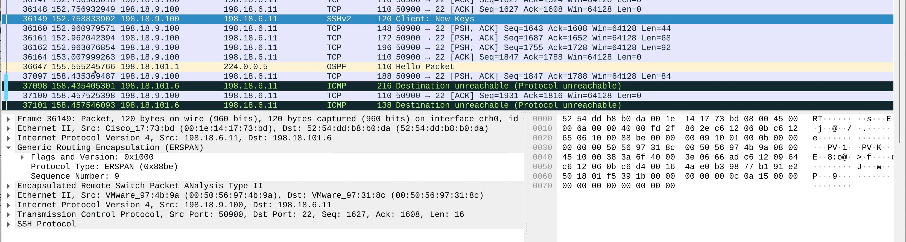

Task 11: Wireshark Live Packet Capture (Web GUI + ERSPAN)¶
Table of Contents¶
- Task Overview
- Step 1 – Connect to the Wireshark Container
- Step 2 – Enable Packet Capture Permissions (One-Time Fix)
- Step 3 – Restart the Wireshark Application
- Step 4 – Configure ERSPAN on Cat8Kv-Task-1
- Step 5 – Access the Wireshark Web GUI
- Step 6 – Start Packet Capture
- Step 7 – Generate SSH Traffic
- Step 8 – Observe the Live Capture
- What You Have Demonstrated
In this task, you will use Wireshark running inside a container to perform live packet capture from a remote router interface using ERSPAN.
This demonstrates how App-Hosting on Cisco edge devices can be used for real-time traffic visibility without deploying external probes.
Task Overview¶
- Wireshark container is deployed on Cat8Kv-Task-2
- SSH traffic on Cat8Kv-Task-1 (GigabitEthernet6) is mirrored using ERSPAN
- Mirrored packets are sent to the Wireshark container
- Traffic is analyzed live using the Wireshark Web GUI
Step 1 – Connect to the Wireshark Container¶
Login to Cat8Kv-Task-2 and connect to the Wireshark container shell.
app-hosting connect appid wireshark session /bin/bash
You should now be inside the container.
Step 2 – Enable Packet Capture Permissions (One-Time Fix)¶
Wireshark GUI uses a helper binary called dumpcap to capture packets.
By default, it does not have the required Linux capabilities inside the container.
Run the following commands inside the container:
sudo -i
which dumpcap
setcap cap_net_raw,cap_net_admin=eip /usr/bin/dumpcap
getcap /usr/bin/dumpcap
Explanation¶
-
sudo -i# Switches to root inside the container. -
which dumpcap# Confirms the location of the packet capture binary. -
setcap cap_net_raw,cap_net_admin=eip /usr/bin/dumpcap# Grants packet capture permissions without running Wireshark as root. -
getcap /usr/bin/dumpcap# Verifies that the permissions are applied correctly.
Expected output:
/usr/bin/dumpcap = cap_net_admin,cap_net_raw+eip
Step 3 – Restart the Wireshark Application¶
Exit the wireshark container and restart the application so the new permissions take effect.
app-hosting stop appid wireshark
app-hosting start appid wireshark
Step 4 – Configure ERSPAN on Cat8Kv-Task-1¶
On Cat8Kv-Task-1, configure ERSPAN to mirror SSH traffic (TCP port 22) from GigabitEthernet6.
4.1 Create an ACL to Match SSH Traffic¶
ip access-list extended 100
10 permit tcp any any eq 22
4.2 Configure ERSPAN Source Session¶
monitor session 11 type erspan-source
no shutdown
source interface GigabitEthernet6
filter access-group 100
destination
erspan-id 11
mtu 1464
ip address 198.18.101.6
origin ip address 198.18.6.11
Verify ERSPAN Status
show monitor session all
Explanation¶
- Traffic on GigabitEthernet6 is monitored
- Only SSH traffic is mirrored (via ACL 100)
- Packets are encapsulated using GRE (ERSPAN)
- Destination is the Wireshark container IP
Step 5 – Access the Wireshark Web GUI¶
From your workstation:
- RDP into the Windows VM:
RDP 198.18.1.20
- Open a browser and access:
https://198.18.101.6:3001
- Launch Wireshark from the web desktop.
Step 6 – Start Packet Capture¶
- Select the capture interface (typically
eth0) and apply the following display filter: - If copy paste doesn't work than type the below filter text
(!(ip.src == 198.18.9.20)) && !(ip.dst == 198.18.9.20)
Explanation¶
This filter removes RDP traffic generated by the Windows VM itself, keeping the capture focused on mirrored SSH traffic.
Step 7 – Generate SSH Traffic¶
From the Lab Ubuntu VM, initiate an SSH session:
ssh admin@198.18.6.11
Login successfully to generate traffic.
Step 8 – Observe the Live Capture¶
On the Wireshark GUI (RDP session):
- Observe packets arriving in real time
- Packets will appear GRE-encapsulated (ERSPAN)
- Inner packets will show TCP port 22 (SSH) traffic

This confirms successful remote live packet capture using ERSPAN.
What You Have Demonstrated¶
- ✅ Wireshark running as a container on a Cisco edge device
- ✅ Secure, browser-based packet analysis
- ✅ ERSPAN-based traffic mirroring
- ✅ Live troubleshooting without external probes
This approach is ideal for on-demand troubleshooting, remote operations, and lab environments where deploying physical taps or SPAN ports is not feasible.